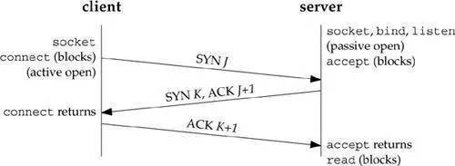
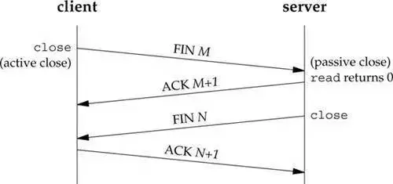
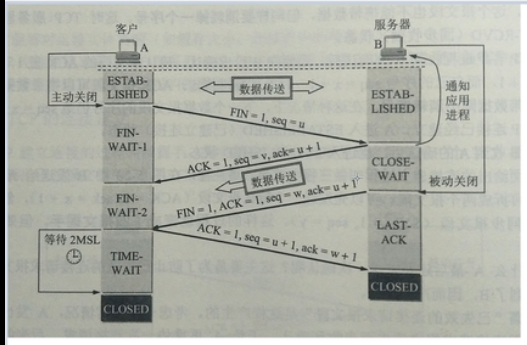

引言
TCP三次握手和四次挥手不管是在开发还是面试中都是一个非常重要的知识点，它是我们优化web程序性能的基础。但是大部分教材都对这部分解释的比较抽象，本文我们就利用wireshark来抓包以真正体会整个流程的细节。
三次握手（用于建立tcp链接）
根据下面这幅图我们来看一下TCP三次握手。p.s: 每个箭头代表一次握手。

tcp三次握手
第一次握手（发送握手报文）
client发送一个SYN(J)包给server，然后等待server的ACK回复，进入SYN-SENT状态。p.s: SYN为synchronize的缩写，ACK为acknowledgment的缩写。
第二次握手（服务端发送确认报文）
server接收到SYN(seq=J)包后就返回一个ACK(J+1)包以及一个自己的SYN(K)包，然后等待client的ACK回复，server进入SYN-RECIVED状态。
第三次握手（发送确认报文已经收到的消息 为了防止报文在中途丢失 网络中断等 服务端又一直开着消耗资源）
client接收到server发回的ACK(J+1)包后，进入ESTABLISHED状态。然后根据server发来的SYN(K)包，返回给等待中的server一个ACK(K+1)包。等待中的server收到ACK回复，也把自己的状态设置为ESTABLISHED。到此TCP三次握手完成，client与server可以正常进行通信了。
为什么要进行三次握手
我们来看一下为什么需要进行三次握手，两次握手难道不行么？这里我们用一个生活中的具体例子来解释就很好理解了。我们可以将三次握手中的客户端和服务器之间的握手过程比喻成A和B通信的过程：
在第一次通信过程中，A向B发送信息之后，B收到信息后可以确认自己的收信能力和A的发信能力没有问题。
在第二次通信中，B向A发送信息之后，A可以确认自己的发信能力和B的收信能力没有问题，但是B不知道自己的发信能力到底如何，所以就需要第三次通信。
在第三次通信中，A向B发送信息之后，B就可以确认自己的发信能力没有问题。
在第一次通信过程中，A向B发送信息之后，B收到信息后可以确认自己的收信能力和A的发信能力没有问题。
在第二次通信中，B向A发送信息之后，A可以确认自己的发信能力和B的收信能力没有问题，但是B不知道自己的发信能力到底如何，所以就需要第三次通信。
在第三次通信中，A向B发送信息之后，B就可以确认自己的发信能力没有问题。
----------------------------------四次挥手---------------------------------------
四次挥手（用于释放tcp链接）
以下面这张图为例，我们来分析一下TCP四次挥手的过程。


tcp四次挥手
第一次挥手（提交关闭请求）
client发送一个FIN(M)包，此时client进入FIN-WAIT-1状态，这表明client已经没有数据要发送了。
第二次挥手（接受到关闭请求了）
server收到了client发来的FIN(M)包后，向client发回一个ACK(M+1)包，此时server进入CLOSE-WAIT状态，client进入FIN-WAIT-2状态。
第三次挥手（发送关闭的数据给服务端）
server向client发送FIN(N)包，请求关闭连接，同时server进入LAST-ACK状态。
第四次挥手（最后的确认已经收到关闭的报文没 如果不发送的话服务器一直会发三次挥手来确认）
client收到server发送的FIN(N)包，进入TIME-WAIT状态。向server发送ACK(N+1)包，server收到client的ACK(N+1)包以后，进入CLOSE状态；client等待一段时间还没有得到回复后判断server已正式关闭，进入CLOSE状态。